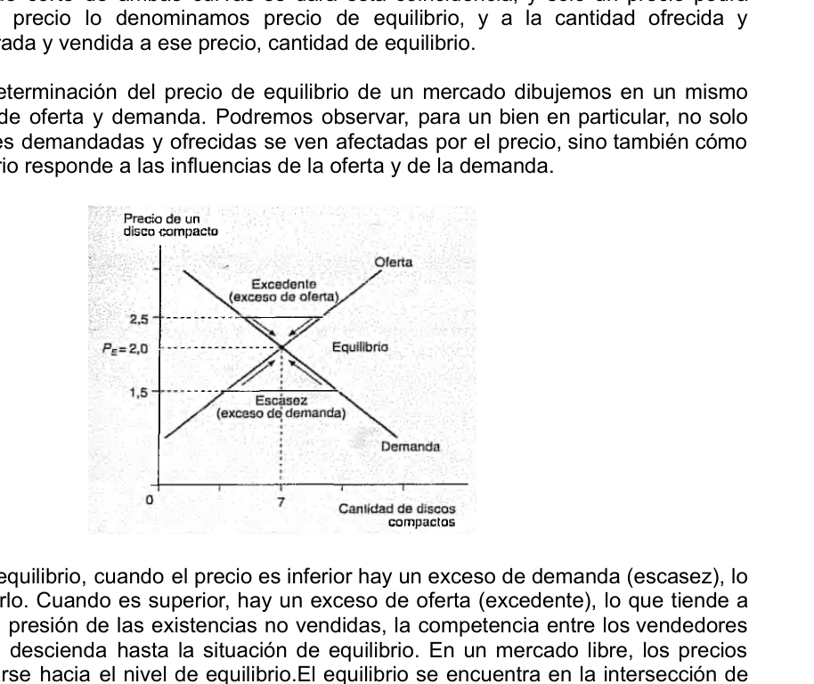
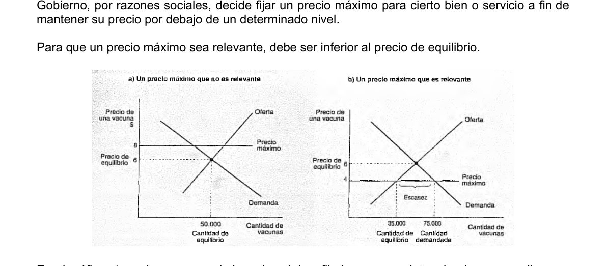
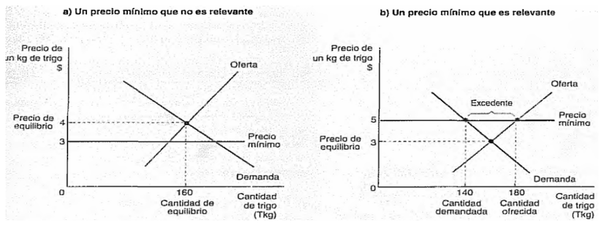
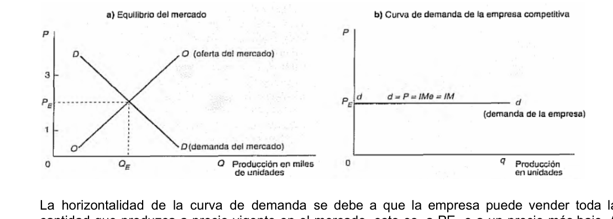
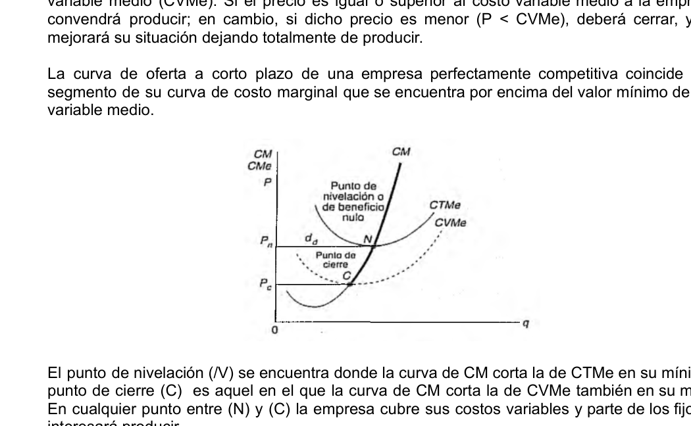

Unidad 4
Fundamentos de Economía I · Lic. Marisa Soledad Lagraña · UCES 2026
El mercado alcanza el equilibrio cuando la cantidad ofrecida iguala a la cantidad demandada. Gráficamente, es el punto donde las curvas de oferta y demanda se intersectan. Ese punto determina el precio de equilibrio (Pe) y la cantidad de equilibrio (Qe).
Cuando el precio es diferente al de equilibrio, surgen fuerzas que lo empujan hacia él:

Cuando se produce un desplazamiento de alguna de las curvas, el punto de equilibrio cambia:
| Cambio | Efecto sobre Pe | Efecto sobre Qe |
|---|---|---|
| Aumento de la demanda (D se desplaza a la derecha) | Sube | Sube |
| Disminución de la demanda (D se desplaza a la izquierda) | Baja | Baja |
| Aumento de la oferta (O se desplaza a la derecha) | Baja | Sube |
| Disminución de la oferta (O se desplaza a la izquierda) | Sube | Baja |
| Aumento simultáneo D y O | Indeterminado | Sube |
| Disminución simultánea D y O | Indeterminado | Baja |
Cuando las dos curvas se desplazan en forma simultánea, el efecto sobre el precio de equilibrio es indeterminado: depende de la magnitud relativa de cada desplazamiento.
En determinadas situaciones el Estado interviene fijando precios que difieren del equilibrio de mercado. Existen dos tipos:
El Estado establece un precio por debajo del precio de equilibrio para proteger a los consumidores. Consecuencias:
El Estado establece un precio por encima del precio de equilibrio para proteger a los productores o trabajadores. Consecuencias:


Si se expresan las curvas de oferta y demanda en forma lineal, es posible calcular el precio y la cantidad de equilibrio de manera algebraica.
En el equilibrio Qd = Qo, entonces:
Datos: Qd = 100 - 5P y Qo = 10 + 3P. Hallar precio y cantidad de equilibrio.
Los mercados difieren según cuatro elementos condicionantes: número de empresas, grado de diferenciación del producto, poder para fijar precios y existencia de barreras a la entrada.
| Tipo de mercado | N. de empresas | Diferenciación | Poder de precios | Barreras |
|---|---|---|---|---|
| Competencia perfecta | Muchas | Homogéneo | Ninguno (tomadores) | Libres |
| Competencia monopolística | Muchas | Diferenciado | Escaso | Libres |
| Oligopolio | Pocas | Homogéneo o diferenciado | Importante | Altas |
| Monopolio | Una | Único (sin sustitutos) | Total | Infranqueables |
La competencia perfecta es la estructura de mercado donde la interacción de la oferta y la demanda determina libremente el precio, sin que ninguna empresa individual pueda influir en él. Sus cinco características son:
Dado que la empresa es precio-aceptante, la curva de demanda que enfrenta es perfectamente horizontal al precio de mercado. Puede vender cualquier cantidad a ese precio, pero no puede vender nada a un precio superior.
Para una empresa competitiva se cumple que el ingreso medio iguala al ingreso marginal y ambos son iguales al precio:
Donde:

Una empresa maximiza sus beneficios produciendo la cantidad donde el ingreso marginal iguala al costo marginal. En competencia perfecta, como IM = P, la condición queda:
La empresa debe producir en el punto donde P = CM y CM sea creciente (condición de segundo orden), para asegurarse de que está en un máximo y no en un mínimo.
La granja obtiene un precio de mercado de $12 por unidad. La tabla muestra los costos marginales:
| q (quintales) | CM ($) | P = IM ($) | Beneficio marginal |
|---|---|---|---|
| 1 | 4 | 12 | +8 (producir) |
| 2 | 6 | 12 | +6 (producir) |
| 3 | 8 | 12 | +4 (producir) |
| 4 | 10 | 12 | +2 (producir) |
| 5 | 12 | 12 | 0 (óptimo) |
| 6 | 14 | 12 | -2 (no producir) |
La granja maximiza beneficios produciendo q = 5, donde P = CM = 12.
La curva de oferta de la empresa competitiva en el corto plazo es la porción de la curva de CM que se encuentra por encima del mínimo del CVMe. Cuando el precio cae por debajo del CVMe mínimo, la empresa cierra porque no cubre ni los costos variables.
Hay dos puntos clave sobre la curva de CM:
Punto de nivelación (N): es donde CM = CTMe (mínimo). La empresa no tiene beneficios extraordinarios ni pérdidas; solo cubre todos sus costos. Si P > CTMe mínimo hay ganancias; si P < CTMe mínimo hay pérdidas.
Punto de cierre (C): es donde CM = CVMe (mínimo). Si el precio cae por debajo de CVMe mínimo, la empresa no puede cubrir sus costos variables y es mejor cerrar.
Regla: si P ≥ CVMe, conviene producir (aunque haya pérdidas se cubren al menos los costos variables); si P < CVMe, conviene cerrar.

En el largo plazo, la libre entrada y salida de empresas elimina los beneficios extraordinarios. Si las empresas obtienen ganancias, nuevas firmas entran, la oferta se desplaza a la derecha y el precio cae hasta que los beneficios se anulan. Si las empresas tienen pérdidas, salen del mercado, la oferta se contrae y el precio sube hasta que las pérdidas desaparecen.
El resultado de largo plazo es:
Esto implica que la empresa produce en el nivel de producción de mínimo costo (escala eficiente), lo que representa una asignación eficiente de recursos.